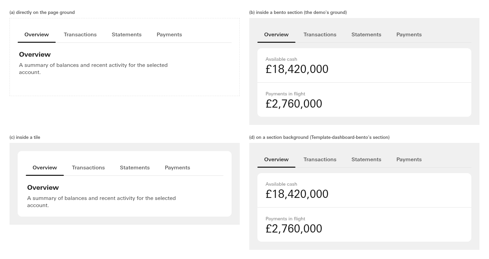
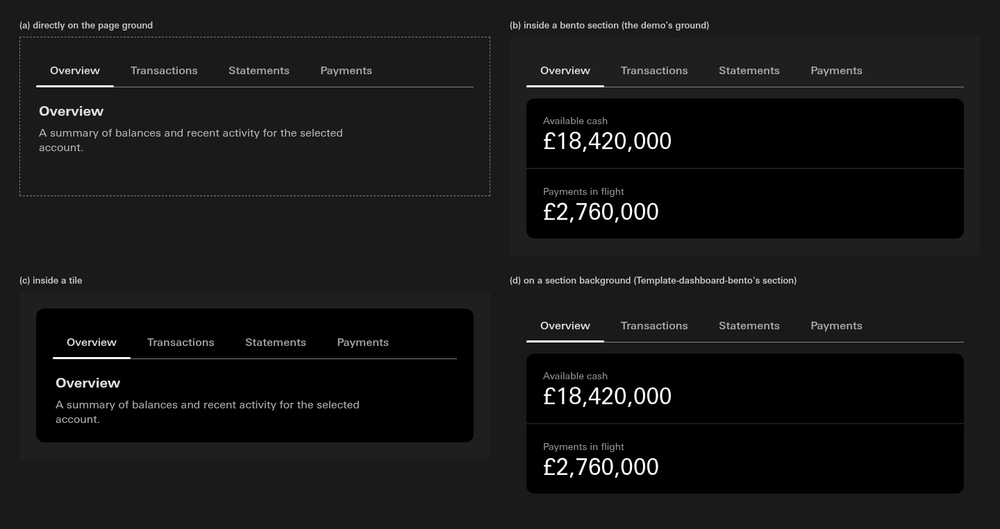
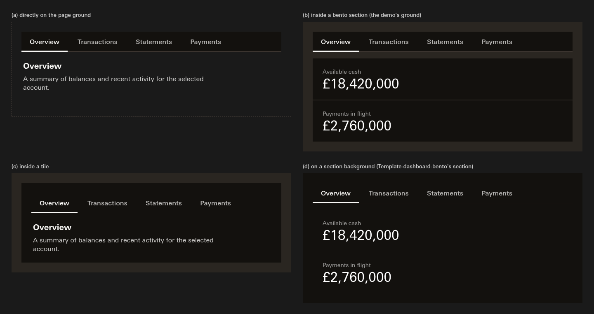
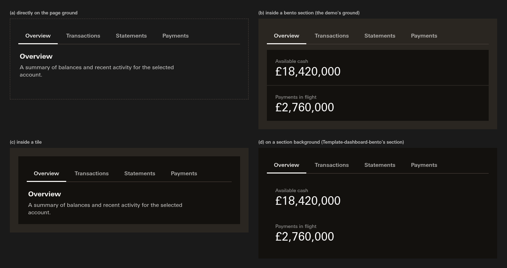

02 · The tab strip · built, does it stand?
The strip now takes the colour of whatever it sits on. The band is gone in light and dark.
"The strip takes its container's colour in both modes"
Four grounds, composed the way the banking demo composes: (a) straight on the page, (b) above tiles on a bento ground, (c) inside a tile, (d) above tiles on a section background. Left is before, right is after. Only the track line and the underline mark the strip now.






- LegibilityThe quiet tab labels still pass everywhere. The lowest is on the light grey ground, 6.44 to 1; in dark the lowest is 7.18 to 1 (the labels are the softer #E1E1E1 at 72%).
- The More menuThe overflow menu that drops from the strip keeps its own surface, as before.
Does it stand?
Technical
- Built at the source:
tabs/backgroundaliasessurface/transparentin both modes (wassurface/raised). The three canon scopes that paint it (.cn-tabs,.cn-page-header-lockup,.cn-template-detail) now paint nothing; the Supercharge and grey-tile option blocks drop their--tabs-backgroundlines.tabs/overflow-backgroundis unchanged. - Contrast pairs re-pointed: Tabs' manifest measures its text, underline and focus ring against
background/default,surface/sectionandsurface/raised(the grounds it sits on) instead oftabs/background; Page header's underline againstbackground/default(its text pair on the page was already there)._validate_token_tiers.pylearns the new alias. Snippet gate 0 failures, fork-ban gate green, token tiers 0 strict failures. - Measured, from the renders (strip colour, the ground under it, the unselected label composited at its opacity, the underline):
| Reading | Context | Strip | Ground | Unselected label (72%) | Underline |
|---|---|---|---|---|---|
| console-light-before | (a) | rgb(255, 255, 255) | #FFFFFF | #5A5A5A · 6.90 | #1A1A1A · 17.40 |
| console-light-before | (b) | rgb(255, 255, 255) | #F0F0F0 | #565656 · 6.44 | #1A1A1A · 15.27 |
| console-light-before | (c) | rgb(255, 255, 255) | #FFFFFF | #5A5A5A · 6.90 | #1A1A1A · 17.40 |
| console-light-before | (d) | rgb(255, 255, 255) | #F0F0F0 | #565656 · 6.44 | #1A1A1A · 15.27 |
| console-light-after | (a) | rgba(255, 255, 255, 0) | #FFFFFF | #5A5A5A · 6.90 | #1A1A1A · 17.40 |
| console-light-after | (b) | rgba(255, 255, 255, 0) | #F0F0F0 | #565656 · 6.44 | #1A1A1A · 15.27 |
| console-light-after | (c) | rgba(255, 255, 255, 0) | #FFFFFF | #5A5A5A · 6.90 | #1A1A1A · 17.40 |
| console-light-after | (d) | rgba(255, 255, 255, 0) | #F0F0F0 | #565656 · 6.44 | #1A1A1A · 15.27 |
| console-dark-before | (a) | rgb(0, 0, 0) | #1A1A1A | #BFBFBF · 9.46 | #FFFFFF · 17.40 |
| console-dark-before | (b) | rgb(0, 0, 0) | #1F1F1F | #C0C0C0 · 9.06 | #FFFFFF · 16.48 |
| console-dark-before | (c) | rgb(0, 0, 0) | #000000 | #B8B8B8 · 10.59 | #FFFFFF · 21.00 |
| console-dark-before | (d) | rgb(0, 0, 0) | #1A1A1A | #BFBFBF · 9.46 | #FFFFFF · 17.40 |
| console-dark-after | (a) | rgba(255, 255, 255, 0) | #1A1A1A | #A9A9A9 · 7.41 | #FFFFFF · 17.40 |
| console-dark-after | (b) | rgba(255, 255, 255, 0) | #1F1F1F | #ABABAB · 7.18 | #FFFFFF · 16.48 |
| console-dark-after | (c) | rgba(255, 255, 255, 0) | #000000 | #A2A2A2 · 8.23 | #FFFFFF · 21.00 |
| console-dark-after | (d) | rgba(255, 255, 255, 0) | #1A1A1A | #A9A9A9 · 7.41 | #FFFFFF · 17.40 |
| supercharge-dark-before | (a) | rgb(19, 17, 14) | #1A1A1A | #B9B8B7 · 8.79 | #F7F6F4 · 16.11 |
| supercharge-dark-before | (b) | rgb(19, 17, 14) | #2A2621 | #BEBCB9 · 7.93 | #F7F6F4 · 13.91 |
| supercharge-dark-before | (c) | rgb(19, 17, 14) | #13110E | #B7B6B4 · 9.30 | #F7F6F4 · 17.45 |
| supercharge-dark-before | (d) | rgb(19, 17, 14) | #13110E | #B7B6B4 · 9.30 | #F7F6F4 · 17.45 |
| supercharge-dark-after | (a) | rgba(255, 255, 255, 0) | #1A1A1A | #B9B8B7 · 8.79 | #F7F6F4 · 16.11 |
| supercharge-dark-after | (b) | rgba(255, 255, 255, 0) | #2A2621 | #BEBCB9 · 7.93 | #F7F6F4 · 13.91 |
| supercharge-dark-after | (c) | rgba(255, 255, 255, 0) | #13110E | #B7B6B4 · 9.30 | #F7F6F4 · 17.45 |
| supercharge-dark-after | (d) | rgba(255, 255, 255, 0) | #13110E | #B7B6B4 · 9.30 | #F7F6F4 · 17.45 |
- Composition:
notes/_lanes/311/A/tabs-context.html, copied from #310 lane B's, canon.css and type.css linked as the demo links them, the real Tabs markup inside.cn-tabs, tiles as.c-bento__tile.dashboard-tile. Driverrender_311A.py tabs, factsimg/facts-tabs.json.